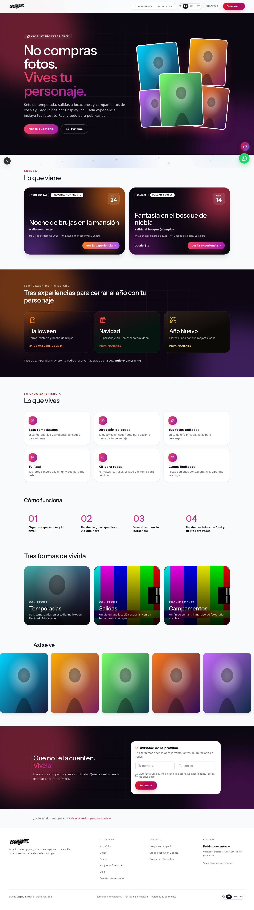
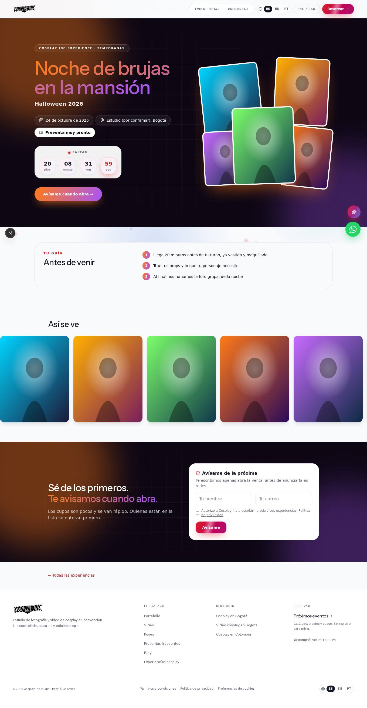
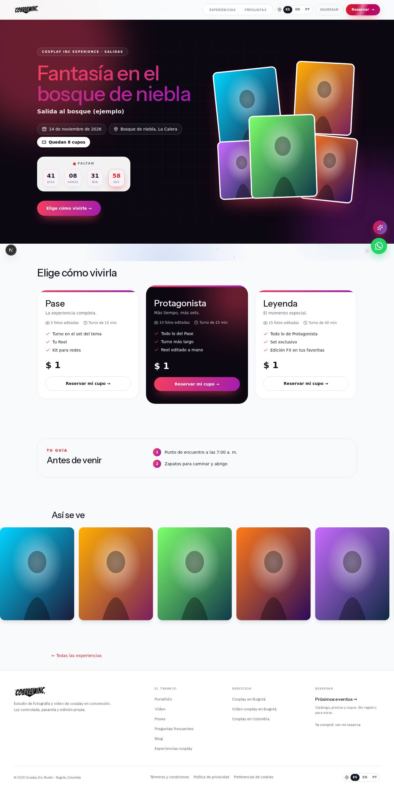
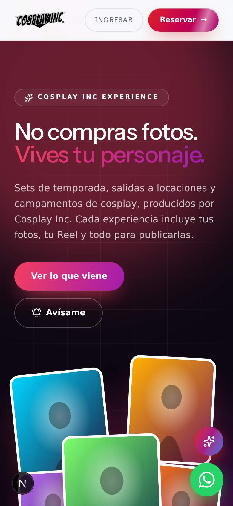
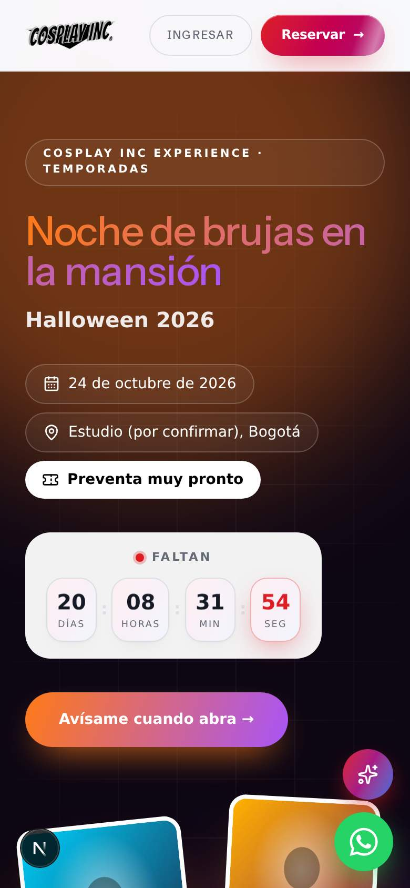
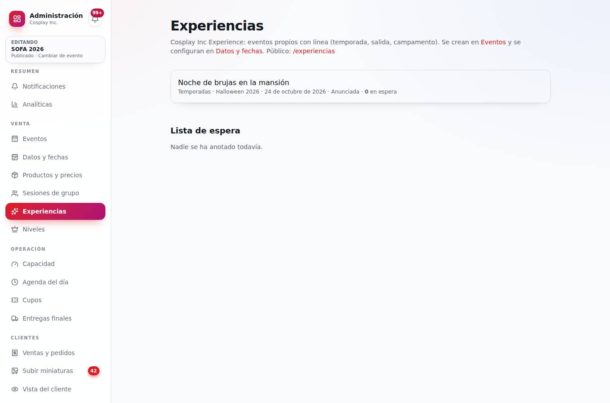
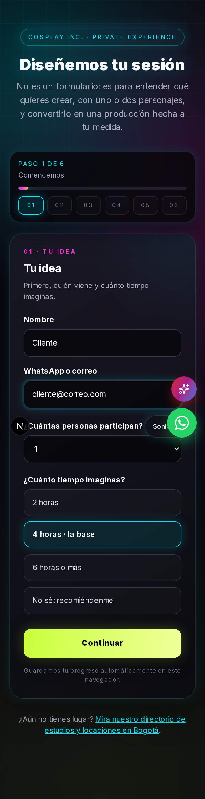
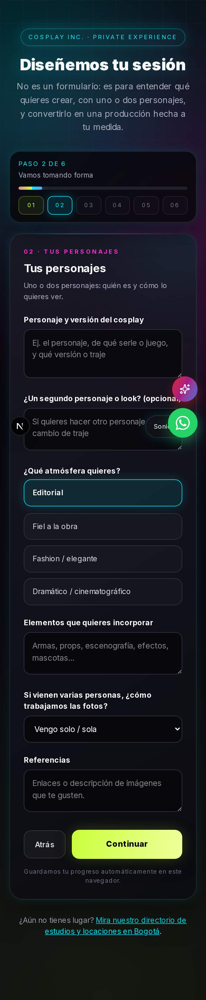

Cosplay Inc · Propuesta de producto · Octubre de 2026
Cosplay Inc Experience
La familia de marcas: Cosplay Inc Studio (la principal), Cosplay Inc Magazine y Cosplay Inc Experience.
Hoy hay dos negocios que se mezclan. Uno es estar en los eventos de otros, como SOFA y Comic Con, con stand o como fotógrafos invitados (por ejemplo, en «Las Cámaras del Dragón» de SOFA). El otro es crear eventos propios: sets temáticos de temporada, salidas fotográficas y campamentos, todos de cosplay. Esta propuesta los ordena en una sola estructura comercial. La idea es venderlos como experiencias, no como paquetes de fotos, y diseñarlos para que quien vaya quiera repetir y quien no fue quiera estar la próxima vez.
Actualización · 4 de octubre: decisiones, propuestas y lo que ya está publicado
A · Fechas para Halloween
Contexto: SOFA es del 8 al 12 de octubre en Corferias y Halloween cae el sábado 31. La sesión tiene que ir antes, para que las fotos lleguen a tiempo de publicarlas en Halloween. Además, SOFA es la mejor vitrina para anunciarla: un QR en el stand hacia /experiencias llena la lista de espera con miles de cosplayers en un fin de semana.
| Opción | Ventajas | Riesgos |
|---|---|---|
| Sábado 24 de octubre Recomendada | 12 días de venta después de SOFA. Una semana para editar y entregar un adelanto (la mejor foto) hacia el miércoles 28, listo para publicar el 31. | Hay que confirmar el estudio esta semana. |
| Domingo 25 de octubre | Mismo margen; algunos cosplayers prefieren domingo. | Un día menos para editar. |
| Sábado 24 y domingo 25 | Se abre el segundo día solo si el primero se agota (la lista de espera lo dice). | Doble alquiler del estudio si no se llena. |
| 17 o 18 de octubre | Más margen de edición. | Choca con la edición de SOFA y deja solo 5 días de venta. |
| 31 de octubre | Es «el día». | Las fotos llegan después de Halloween y mucha gente tiene fiestas. |
B · Cupos: cuántos caben en 6 horas de estudio
6 horas son 360 minutos. Menos 30 de recepción y montaje, y 30 de foto grupal y cierre, quedan 300 minutos de disparo por cada set con su fotógrafo. Cada nivel tiene su turno (que incluye el cambio entre personas). Propuesta: Pase 15 min, Protagonista 25 min, Leyenda 40 min.
| Montaje | Mezcla de niveles | Cupos |
|---|---|---|
| 1 set, 1 fotógrafo (300 min) | 5 Pase + 4 Protagonista + 3 Leyenda = 75 + 100 + 120 = 295 min | 12 |
| 2 sets, 2 fotógrafos (600 min) | 10 Pase + 8 Protagonista + 6 Leyenda = 150 + 200 + 240 = 590 min | 24 |
| 2 sets, solo Pase | 40 turnos de 15 min | 40 (máximo teórico, sin experiencia premium) |
Para saber si da la cuenta: punto de equilibrio = costo del día (estudio + equipo + escenografía + publicidad) ÷ ticket promedio. Con tus precios y el costo del estudio la armamos en una tabla: si el equilibrio está por encima de 12, hacen falta dos sets.
C · Los niveles: ¿los de SOFA o unos propios?
Mi propuesta: separar las dos cosas.
- Para vender la experiencia, tres niveles simples: Pase, Protagonista y Leyenda (sección 3). Cada uno es un producto del evento, con sus fotos incluidas, su turno y lo que incluye. Sin la matriz de SOFA (acabados, escalones por cantidad, combos), que está pensada para la venta rápida en convención.
- Los niveles de SOFA (PASS, ELITE, MASTER, LEGENDARIO, INMORTAL) se quedan como el estatus del cliente, el que viaja con él entre eventos. Ya existe la regla «eventos asistidos» para subir de nivel: cada experiencia cuenta como un evento. Ese es el pasaporte, y ya está hecho.
- Ojo con el nombre: hoy «Cosplay Inc Experience» aparece en la página de SOFA como título de la escalera de niveles («Tu nivel sube contigo») y en el agradecimiento de la reserva. Encaja bien: la marca Experience reúne las experiencias y la membresía.
D · Pase de temporada: opciones
| Opción | Qué recibe quien compra las tres (Halloween, Navidad y Año Nuevo) | Lectura |
|---|---|---|
| 1 · Tríptico de temporada | Una pieza diseñada con sus tres looks del año, solo para quienes tienen el pase. | Exclusivo, no se puede comprar suelto. Genera deseo. |
| 2 · Calendario incluido | El calendario del año siguiente con sus fotos. | Producto físico y muy fotografiable. |
| 3 · Sube un nivel | Paga tres Pases y uno se vuelve Protagonista. | Muestra el nivel de arriba: muchos repiten en él. |
| 4 · Prioridad | Elige turno primero y recibe el adelanto el mismo día en las tres. | No cuesta producirlo. |
| 5 · Descuento | Un porcentaje menos sobre los tres. | Lo más simple, pero acostumbra a esperar descuentos. |
Recomendación: 1 + 4 (exclusividad y prioridad, sin bajar el precio). Si quieres algo físico, 2 + 4.
E · Las Cámaras del Dragón
Somos fotógrafos invitados dentro de una experiencia que dirige otro fotógrafo. Nos dan el espacio, manejamos nuestra agenda y vendemos nuestras fotos. En el sistema es el evento SOFA (convención), con su venta de siempre; no hace falta nada nuevo. Sugerencia: decir en la página de SOFA «Encuéntranos en Las Cámaras del Dragón», si el organizador está de acuerdo con que usemos el nombre.
F · Salidas: una por comunidad
Una salida bien hecha necesita presencia y un plan para los imprevistos: permisos de la locación, transporte, clima y plan B, seguridad, baños, comida y primeros auxilios. Tu idea de hacer una salida por comunidad (fandoms, clubes, grupos de un anime o una saga) es muy buena: el tema sale de la comunidad, quien lidera la comunidad ayuda a convocar (con un beneficio por hacerlo) y el grupo ya viene armado. Queda para la fase 3, con una lista de chequeo de logística por salida.
G · Menores de edad
Hecho como dijiste. La edad no se pregunta en ningún formulario. Cuando el equipo sabe o intuye que es menor, marca «Menor de edad» en el proyecto y solo entonces el cliente ve el consentimiento de su acudiente. Mi opinión: estoy de acuerdo para las sesiones normales. Dejé una sola casilla, «Confirmo que soy mayor de edad», que solo aparece en proyectos sensuales o eróticos. Ahí la ley colombiana es muy dura con el material de menores, aunque no haya intención, y esa confirmación es la protección del estudio. Si prefieres quitarla, se quita.
H · Lo que ya está publicado
- /experiencias (Cosplay Inc Experience): lo que viene, las tres líneas y «Avísame de la próxima». Está en el menú de arriba, en el pie y en /eventos.
- La página de cada experiencia: tema en grande, fecha, lugar, cupos que quedan, los niveles con «qué incluye» y «Reservar mi cupo» (que sigue por la compra de siempre: agenda, pago, reserva y galería), y la guía «Antes de venir». Si la venta no abrió o se agotó, aparece el «Avísame».
- Anunciar antes de vender: una experiencia puede salir como «Preventa muy pronto» sin estar publicada para la venta. Así no cambia a dónde lleva «Reservar» durante SOFA.
- Admin → Experiencias: cuántos esperan cada experiencia y el botón «Avisar que abrió». Manda un correo a cada uno, una sola vez. Quien se anotó «a la próxima» sigue anotado para las siguientes.
El diseño (versión 2)
Héroe oscuro con los colores de la marca y fotos de la casa (las del portafolio publicado), experiencias como afiches, la temporada de fin de año (Halloween naranja y morado, Navidad rojo y verde, Año Nuevo dorado), «Lo que vives», «Cómo funciona», las tres líneas con foto, galería y el «Avísame». Cada experiencia toma los colores de su tema y trae cuenta regresiva. Las capturas son del entorno de prueba: las fotos son de relleno y los precios de $1 son de ejemplo. En el sitio salen las fotos reales del portafolio.






Por dónde se llega
- Directo: cosplay-inc.com/experiencias
- Computador: «Experiencias» en el menú de arriba.
- Celular y computador: «Experiencias cosplay» en el pie de página, y el recuadro «Cosplay Inc Experience» en cosplay-inc.com/eventos.
- Cada experiencia: cosplay-inc.com/experiencias/<enlace-del-evento> (sale en cuanto la anuncias o la publicas).
- Admin: Administración → Venta → Experiencias.
Sesión personalizada: el brief, libre
Ya no sugiere Kakegurui ni Cyberpunk. Ahora es para uno o dos personajes, pregunta cuánto tiempo imaginas (2 horas, 4 horas · la base, 6 o más, o «recomiéndenme»), el tono (de clásico a sensual, opcional), la locación (estudio o exterior), la producción, lo que te llevas y la preproducción. Está escrito en tú. Se ve en cosplay-inc.com/sesionpersonalizada.


Para dejar Halloween anunciado antes de SOFA
- Admin → Eventos: crea el evento (tipo «propio») con la fecha elegida. Se crea copiando otro evento o plantilla; desactiva los productos de SOFA que se copien.
- Admin → Datos y fechas: línea «Temporadas», tema («Noche de brujas en la mansión»), la guía y la casilla «Anunciar en /experiencias». No lo publiques todavía.
- Con los precios: crea los productos Pase, Protagonista y Leyenda. En la descripción, una línea de resumen y luego lo que incluye con «- » al inicio de cada línea. Pon las fotos incluidas y el turno, agrégalos al evento con su precio, arma la agenda, publica y en Admin → Experiencias oprime «Avisar que abrió».
Si prefieres, lo configuro yo apenas me pases la fecha, el estudio y los precios.
1 · Dos mundos, una sola marca
Cosplay Inc en tu evento
Vamos a donde ya está la comunidad. Ahí hay volumen: es la puerta de entrada y donde mucha gente nos conoce.
- Stand: estudio con venta propia (ya funciona en el sistema).
- Fotógrafos invitados en la experiencia de otro: en SOFA somos parte de «Los caballeros de Las Cámaras del Dragón», una experiencia que dirige otro fotógrafo. Nos dan el espacio, manejamos nuestra propia agenda y vendemos nuestras fotos.
- Invitados: jurado, talleres, cobertura, fotografía oficial (con contrato del organizador).
Experiencias Cosplay Inc
Eventos que producimos nosotros: cupo limitado, tema propio y experiencia completa. Es donde está el margen y donde la gente se fideliza.
- Temporadas: sets tematizados en estudio (Halloween, Navidad, Año Nuevo…).
- Salidas: un día en una locación especial (bosque, ruinas, ciudad de noche…).
- Campamentos: fin de semana inmersivo en una locación.
La idea que los une es una escalera para el cliente. En la convención nos conoce. En una experiencia propia vive algo memorable y vuelve. Cuando está listo, encarga su proyecto personalizado. Cada escalón lleva al siguiente:
2 · El catálogo de experiencias
Cada experiencia es una ficha de producto con lo mismo siempre: tema, lugar, fecha, cupos, qué incluye y qué se lleva el cliente. Así se puede repetir y escalar sin reinventarla cada vez.
Sets temáticos en estudioEntre 20 y 30 cosplayers en un día, por turnos, con 2 o 3 sets armados según el tema. Es la más fácil de operar y repetir. Ideal para Halloween, Navidad y Año Nuevo.
Un día en una locaciónBosque, cascada, ruinas, ciudad de noche… tematizada (por ejemplo, «Fantasía del bosque» o «Cyberpunk nocturno»). De 12 a 20 cosplayers, punto de encuentro, transporte opcional.
Fin de semana inmersivoDos días en una locación: varias temáticas, golden hour, fotos nocturnas y fogata. Cupo pequeño y ticket alto. Es la experiencia «de la que todos hablan».
Invitados en experiencias de otrosComo en Las Cámaras del Dragón (SOFA): espacio cedido, agenda y venta nuestras. En el sistema es el mismo evento de la convención; no necesita nada aparte.
La ficha de una experiencia
| Campo | Para qué sirve |
|---|---|
| Tema y concepto | La historia que se vende («Noche de brujas en la mansión abandonada»), con moodboard y personajes sugeridos. |
| Lugar y punto de encuentro | Estudio, locación y cómo llegar. En salidas y campamentos: transporte, horarios y qué llevar. |
| Cupos y turnos | Cuántos cosplayers, cuántos sets y cuánto dura cada turno. Los cupos que quedan se ven en vivo. |
| Niveles de experiencia | Qué incluye cada nivel (sección 3). |
| Equipo | Fotógrafo, asistente de poses, maquillaje y aliados. |
| Reglas | Edad (menores con acudiente; nada sensual), clima (plan B o reprogramación), cancelación y uso de imagen. |
| Lo que se lleva | Fotos, Reel, kit para redes, impreso y recuerdo físico. |
3 · Vender la experiencia, no las fotos
La regla que propones es buena y es la base: el nivel de entrada se paga sobre el mínimo de fotos, pero se lleva mucho más. Así el precio se justifica con algo concreto (las fotos) y todo lo demás se percibe como regalo. Cada nivel de arriba suma experiencia (más tiempo, más sets, prioridad), no solo más fotos.
Pase
La experiencia completa
- El mínimo de fotos editadas
- Turno en los sets del tema
- Reel con tus fotos (ya lo genera el sistema)
- Kit «Para tus redes»: formatos, carrusel, collage y texto
- Foto grupal oficial del evento
- Credencial de la experiencia y sello en tu pasaporte
Protagonista
El más elegido
- Todo lo del Pase
- Más fotos y un turno más largo
- Todos los sets del tema
- Reel editado a mano, con música y efectos del tema
- Una impresión del tema (postal o lámina)
- Adelanto el mismo día: tu mejor foto, lista para publicar
Leyenda
Cupos muy limitados
- Todo lo de Protagonista
- Set exclusivo o momento especial (golden hour, humo, fuego frío…)
- Video detrás de cámaras personal
- Impresión grande fine art
- Prioridad para elegir turno
- Edición FX en tus favoritas
Son nombres de trabajo y los precios los defines tú. Mi sugerencia de criterio: que el «Pase» salga por foto más barato que una sesión personalizada (los sets se comparten) y que el cliente perciba que el valor de lo incluido supera claramente lo que pagó.
Productos que se pueden sumar (y casi todos ya existen)
| Producto | Momento | ¿Existe? |
|---|---|---|
| Reel automático con estilos y encuadre | Después | Sí |
| Kit para redes: formatos, carrusel, collage, texto y hashtags oficiales | Después | Sí |
| Fotos adicionales y ampliación de galería | Durante / después | Sí |
| Sesión de grupo o crew con precio por persona | Antes | Sí |
| Niveles, rangos y créditos de fotos | Siempre | Sí |
| Adelanto el mismo día | Durante | Por construir |
| Postal o tarjeta de temporada (digital e impresa) | Después | Por construir |
| Calendario del año siguiente con tus fotos (ideal para Año Nuevo) | Después | Por construir |
| Impresión fine art y fotolibro de la temporada | Después | Por construir |
| Maquillaje y peinado (aliado, con comisión) | Antes | Por construir |
| Alquiler de props y vestuario del tema | Antes | Por construir |
| Transporte y alimentación (salidas y campamentos) | Antes | Por construir |
4 · Temporada de fin de año: la primera prueba
Pase de temporada: las tres experiencias juntas, pagadas por adelantado y con beneficio, por ejemplo el calendario incluido. Para ti es caja anticipada y asistencia asegurada. Para el cliente, la sensación de ser parte de algo.
5 · Que quieran repetir… y que los demás quieran ir
6 · El recorrido del cliente en una experiencia
| Antes | Durante | Después |
|---|---|---|
| Ve la experiencia y los cupos que quedan. Elige su nivel y su turno, paga y recibe la guía: qué llevar, moodboard, personajes sugeridos y cómo llegar. Recordatorios. | Recepción y credencial. Set con dirección de poses, música y ambientación. El adelanto el mismo día. La foto grupal. | Galería y selección. Reel y kit para redes. Impresos y calendario. «¿Ya publicaste?». Sello en el pasaporte. Encuesta corta. Invitación a la próxima, con preventa. |
El «antes» y el «después» ya funcionan para las reservas de convención (agenda, recordatorios, galería, Para tus redes). Las experiencias los reutilizan.
7 · Dónde está el dinero
| Fuente | Convención | Experiencia propia |
|---|---|---|
| Venta de niveles o paquetes | Sí | Sí (con más margen) |
| Subir de nivel antes o durante | Sí | Sí |
| Fotos adicionales, impresos, calendario, fotolibro | Sí | Sí |
| Pase de temporada (prepago) | — | Sí |
| Honorarios del organizador (invitados, cobertura oficial) | Sí | — |
| Patrocinio de marcas en los sets | Sí (en la experiencia propia dentro del evento) | Sí |
| Comisión de aliados (maquillaje, props, transporte) | — | Sí |
| Puente hacia el proyecto personalizado | Sí | Sí |
Cuenta para saber si una experiencia vale la pena
Ingreso = cupos vendidos × precio promedio por nivel + extras vendidos.
Costo = locación + escenografía y props + equipo (fotografía, asistencia, edición) + transporte y alimentación + publicidad.
Punto de equilibrio = costo ÷ precio promedio → cuántos cupos hay que vender para no perder.
8 · Cómo se construye (reutilizando lo que ya funciona)
El sistema ya distingue entre convención y evento propio, y cada evento tiene sus productos, precios, capacidad, agenda, grupos, niveles, galería, Reel y Para tus redes. Lo que falta es sobre todo presentación y categorías, no un sistema nuevo.
| Pieza | Estado |
|---|---|
| Evento propio con productos, cupos, turnos, pagos y galería | Ya existe |
| Categoría de experiencia (temporada, salida, campamento) y forma de participación en convenciones (stand, experiencia propia, invitados) | Por construir |
| Página pública «Experiencias», separada de «Eventos donde estamos», con temporada, cupos en vivo y «Avísame de la próxima» | Por construir |
| Niveles de experiencia mostrados como «qué vives y qué te llevas», no como número de fotos | Por construir (sobre los productos que ya existen) |
| Guía de la experiencia: qué llevar, punto de encuentro, moodboard | Por construir |
| Lista de espera y preventa para quienes ya fueron | Por construir |
| Pasaporte con sellos, sobre los rangos | Por construir |
| Página «Así fue» | Por construir |
| Reglas de menores y uso de imagen (las mismas de «Tu Proyecto») | Ya existen (se reutilizan) |
9 · Plan por fases
Experiencias con lo que ya hayCategorías y página «Experiencias». Halloween como primer evento propio, con sus 3 niveles, cupos y turnos. Guía de la experiencia. Lista de espera.
Productos de temporadaTarjeta de Navidad, calendario, pase de temporada, adelanto el mismo día y página «Así fue».
Salidas, campamentos y pasaporteLogística de punto de encuentro, transporte y varios días. Pasaporte con sellos y beneficios. Votación del próximo tema.
Comunidades y marcasSalidas por comunidad, patrocinios de marcas en sets y red de aliados con comisión.
10 · Decisiones que necesito de ti
Ya definidas: estudio de 6 horas máximo, pase de temporada sí, Las Cámaras del Dragón (invitados), menores solo cuando se sepa, y la marca Cosplay Inc Experience. Faltan:
- Fecha de Halloween: sábado 24 (recomendada), domingo 25 o ambos.
- Estudio: cuál, su costo y si caben 1 o 2 sets.
- Niveles: confirmar Pase, Protagonista y Leyenda, sus turnos (15, 25 y 40 min), cuántas fotos incluye cada uno y su precio.
- Pase de temporada: elegir el beneficio (recomiendo tríptico + prioridad) y su precio.
- Tema de Halloween: «Noche de brujas en la mansión» u otro.
11 · Cómo saber si funciona
- Ocupación: cupos vendidos sobre cupos ofrecidos, y en cuántos días se agotan.
- Ticket promedio y qué nivel se elige (si gana Protagonista, la escalera está bien armada).
- Repetición: qué porcentaje vuelve a otra experiencia en 6 meses.
- Lista de espera: cuánta gente quedó fuera (la señal para abrir otra fecha).
- Alcance: publicaciones con los hashtags oficiales y nuevos clientes que llegan por ellas.
- Escalera: cuántos pasan de convención a experiencia, y de experiencia a proyecto personalizado.
Documento de trabajo. No incluye precios: se definen en la sección 10. Las políticas de menores, clima, cancelación y uso de imagen deben revisarse con un abogado antes de publicarse.